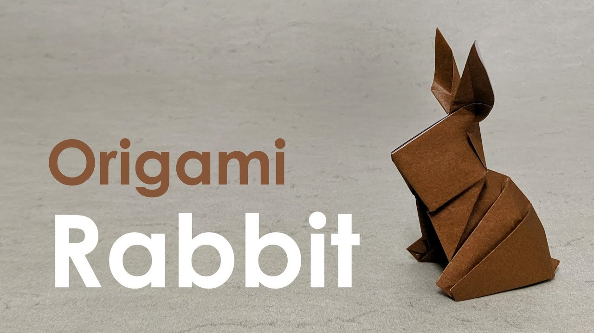

Rabbits are small, furry mammals with long ears, short fluffy tails,
and strong, large hind legs. They have 2
pairs of sharp incisors (front teeth),
one pair on top and one pair on the bottom. ... Their teeth are specifically
adapted for gnawing and grow continuously throughout their lives.
So do you want to build it! Click the picture to start!